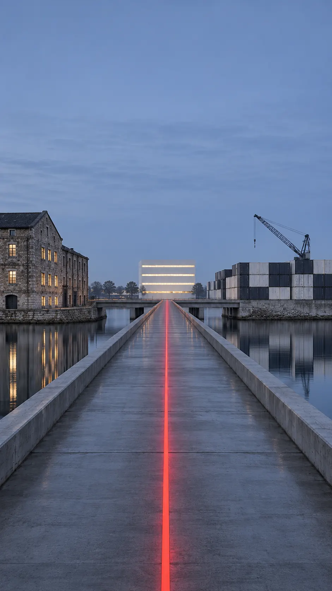

PLASMA企業資料平台 · 展示
核心資料庫不再被壓垮，各單位只看得到權限內的資料，AI 只能讀不能改。
HIS 不用動，健保申報、FHIR 交換與院內 AI 都改從 Plasma 取用資料。
從資料庫連線、View、排程到 MCP，每個元件做什麼、規格與限制。
連上 HIS、LIS、EMR，匯入資料字典，AI Agent 自動建好病歷摘要 API。
四個資料庫跨庫查詢、物化、出 API，一天串起住院品質儀表板。